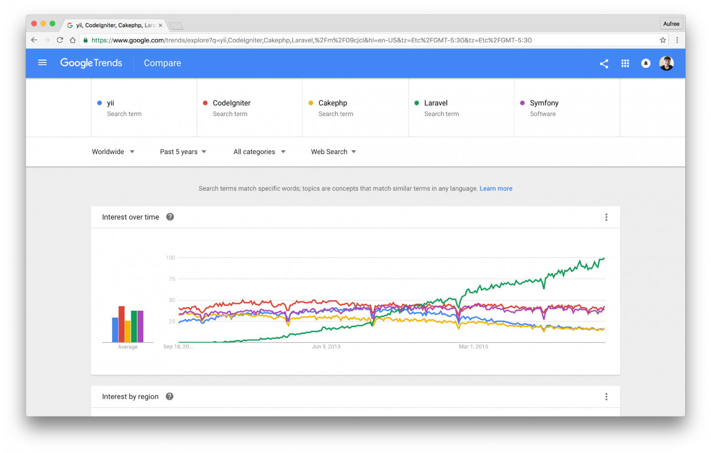

1.3. Laravel 与 PHP
为什么是 PHP？
PHP 全称是 PHP: Hypertext Preprocessor，译为：『超文本预处理器』。是一门开源脚本语言，专为『动态 Web 开发』而生。
PHP 在服务器脚本语言市场占有率中遥遥领先于其他对手：
上图是由 W3Techs 网站提供的 服务器端脚本语言市场占有率 排名，数据样本是 Alexa 世界排名 前一千万 的网站，其中 82.6% 使用 PHP 构建，此数据每日更新。可以看出 PHP 惊人的市场占有率。世界上大部分的商业网站在使用 PHP，可想而知这些企业对 PHP 的人才需求能有多巨大。
作为职业
如果你在选择职业，巨大的市场占有率有以下好处：
架构选型
如果你是创业者或者技术负责人，在做技术架构选型，PHP 的巨大的市场占有率有以下好处：
- 招人好招 - 笔者喜爱 ROR（基于 Ruby 语言），但是在 PHP 有了 Laravel 后毫不犹豫就把公司的整个技术堆栈切到 PHP，最大原因就是 人好招，创业公司里，组建团队是个头痛的问题；
- 解决方案多 - PHP 有很多优质的开源软件，拿过来直接就能使用。另外，作为日常开发，也是非常方便。举个有趣的例子：很多第三方开发者服务 SDK 包优先考虑的就是先出个 PHP 的 SDK，原因就是：PHP 占有率高。
什么是 Laravel？
Laravel 是 Taylor Otwell 开发的一款基于 PHP 语言的 Web 开源框架，采用了 MVC 的架构模式，在 2011 年 6 月正式发布了首个版本。
由于 Laravel 具备 Rails 敏捷开发等优秀特质，深度集成 PHP 强大的扩展包（Composer）生态与 PHP 开发者广大的受众群，让 Laravel 在发布之后的短短几年时间得到了极其迅猛的发展。我们通过 Google Trends 提供的趋势图（图 1.1）可以看出，Laravel 框架在过去十年，其增长速度在各类 PHP 框架中都是有史以来最快的，这也从正面直接反映出了 Laravel 的强大，以及其未来非常可观的发展前景。
图 1.1 - Google 趋势（Laravel 为绿色）
为何 Laravel 如此受欢迎？
一个优秀的工程师在构建一个语言框架时，应该懂得如何去协调好框架和语言之间的关系，并借助前人的智慧来思考框架的合理性与可扩展性。Laravel 的作者 Taylor Otwell 无疑做到了这一点。
若你之前对 Web 开发有所了解，那么你可能会知道有个叫 Ruby on Rails（简称 Rails）的知名 Web 开发框架。Rails 是基于 Ruby 语言构建的一个 Web 开发框架，该框架有以下原则：
- 强调与注重敏捷开发；
- 约定高于配置（Convention over configuration）；
- DRY（Don't repeat yourself）不要重复自己，提倡代码重用；
- 重视「编码愉悦性」。
自诞生之日起，Rails 便受到了技术社区的广泛关注与讨论。而 Laravel 正是由于结合了 Rails 框架的这几项优秀特质，才使得其在 PHP 社区中备受推崇。
国内 Laravel 生态圈在哪？
Laravel 在国内的生态圈发展也日趋成熟，你可以很轻松的在网上找到很多 Laravel 相关的中文学习资料、技术讨论社区：
- Laravel China 社区 - 国内最大的 PHP / Laravel 开发者社区，由 Summer 在 2014 年创建；
- Laravel 中文文档 - Laravel China 社区维护的中文文档，涵盖 5.1, 5.2, 5.3, 5.4, 5.5 版本
- Laravel 资讯专栏 - 为 Laravel 开发者提供最新最热的技术资讯
- Laravel CheatSheat - Laravel 速查表
- Composer 中文镜像 - Packagist 中国全量镜像，让 Composer 速度如飞；
- Laravel 远程工作 - 做一个自由的程序员，选择一种自由的生活方式；
Laravel 版本类型有哪些？
Laravel 有两个版本类型：
- LTS 版本 - 长期支持版本，英文 Long Term Support 的缩写，此类版本是 Laravel 能提供的最长时间维护版本。
- 一般发行版 - 只提供 6 个月的 Bug 修复支持，一年的安全修复支持。
什么是『长期支持』？
长期支持 （英语：Long-term support，缩写：LTS）是一种软件的产品生命周期政策，特别是开源软件，它增加了软件开发过程及软件版本周期的可靠度。长期支持延长了软件维护的周期；它也改变了软件更新（补丁）的类型及频率以降低风险、费用及软件部署的中断时间，同时提升了软件的可靠性。但这并不必然包含技术支持。
在长期支持周期的开始，软件设计师会将软件特性冻结：他们制作补丁来修复程序错误及计算机安全隐患，但不会加入新的，可能会造成软件破坏的功能。软件维护者可能会单独发布补丁，或是将其置于维护版本、小数点版本或是服务包中发布。支持周期结束后，其称之为产品的生命周期结束。
“长期支持”这个术语通常是保留给特殊的软件版本，其他版本会有更短的生命周期。通常来说，长期支持版本至少会被维护两年。
From 维基百科
Laravel 有着怎样的版本计划？
| 版本 | 发布日期 | 版本类型 | 维护周期 |
|---|---|---|---|
| Laravel 5.1 | 2015 年 6 月 | LTS 长久支持 | Bug 修复 2017 年 6 月份，安全修复 2018 年 6 月份 |
| Laravel 5.2 | 2015 年 12 月 | 一般发行 | 提供 6 个月的 Bug 修复支持，一年的安全修复支持 |
| Laravel 5.3 | 2016 年 8 月 | 一般发行 | 提供 6 个月的 Bug 修复支持，一年的安全修复支持 |
| Laravel 5.4 | 2017 年 1 月 | 一般发行 | 提供 6 个月的 Bug 修复支持，一年的安全修复支持 |
| Laravel 5.5 | 2017 年 8 月 | LTS 长久支持 | Bug 修复 2019 年 8 月份，安全修复 2020 年 8 月份 |
需要注意的是，以上只是大致的计划，版本的最终发布时间会有所变动。
如何选择 Laravel 版本？
不同角色，不同项目类型，有不同的建议：
- 如果你是新手，目的只是为了学习，请直接选用最新版本；
- 如果是现有项目，目的是学成后能对项目进行二次开发，请选用与项目匹配的版本进行学习；
- 如果是商业项目，请优先考虑 LTS 版本；
推荐阅读：《如何选择 Laravel 框架版本》 by Summer